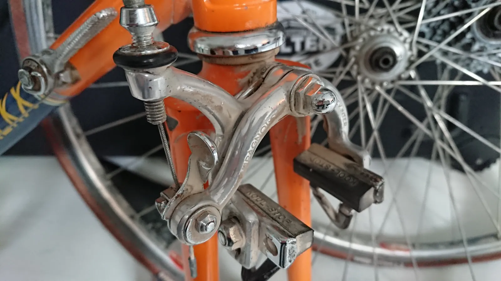

Firenze – Frankfurt – Hamburg – Frankfurt – Billund – Vejle!

- Kaptajn Bjørnsteen og Løjtnant Sørensens deltagelse i L’Eroica er endt med, at de har brugt for flere års klimakvoter i flyrejser.
Kaptajnen og Løjtnanten havde den fornøjelse at flyve med Dolomiti Air og Lufthansa – ned og hjem hjem fra Eroica. Turen ned fra Hamburg til Firenze via München gik upåklageligt. Ingen forsinkelser og både kufferter og cykler kom frem.
– Vi havde ellers frygtet, at vores cykler ville strande i München på grud af, at vi skulle skifte fly. Men det gjorde de ikke, fortæller Kaptajn Bjørnsteen
– Og det skal lige indskydes, at Air Dolomitti serverer, selvfølgelig af stewardesser iklædt stilfulde figursyede habitter, en rigtig god let afkølet toscanske rødvin til den pose snaks man får ombord.
Men da Kaptajnen og Løjtnanten skulle hjem mandags, var der sikkert det man karakterisere let italiensk kaos i Firenze Lufthavn. Det blæste lidt meget – og derfor var der forsinkelser på ca. en time på Air Dolomitti (som er ejet af Lufthansa) fra Firenze til München. Oven i det, var der også en meget lang kø til indtjekningen. Det tog tæt på uendelig, at blive tjekket ind.
– Men i Firenze har de ikke et sted hvor man afleverer oversize bagage – i vores tilfælde cykelkufferterne. Vi blev bedt om bare at stille dem siden af indtjekningskøen, lyder det fra Løjtnant Sørensen.
– Der var altså ikke tale om carbon-stangvare-cykler. Det var vores Eddy Merckx løbscykler – med helligt støv fra strade bianche. En uerstattelig kombination!
Forsinkelsen på flyet gjorde, at Kaptajnen og Løjtnanten ikke nåede forbindelsesflyet fra München til Hamburg. I stedet blev de ombooke til et fly 2 timer senere.
– Da vi endelig ankommer til Hamburg Lufthavn – og har ventet en time på vores kufferter – må vi gå den slagne gang hen og få lavet en såkaldt Property Irregularity Report. Hverken vores kufferter eller cykler er kommet frem, fortæller Kaptajn Bjørnsteen
– Og så måtte vi køre til Vejle – uden kufferter og cykler. Og for det ikke skal være løgn – så blev vi stoppet ved den danske grænse:“God aften. Hvor kommer I fra”
“Vi har været i italien”
“Og hvad har i lavet i Italien?”
“Vi har været nede og køre cykelløb”
“Og hvor er jeres cykler”
“Tjaaa ….”
Tirsdag gik. Onsdag gik. Kaptajnen og Løjtnanten blev ikke kontaktet af Lufthansa. På en sporingshjemmeside, var der heller ikke noget at se.
Men torsdag dukkede der pludselig sporing op:
– Vores kufferter og cykler var blevet sendt fra Firenze torsdag morgen! Endda med to forskellige fly. Lidt efter stod de så i Frankfurt. Herfra blev de fløjet til Hamburg, fortæller Løjtnant Kasper.
– Der gik dog ikke mange timer, før kufferterne var på vej igen! De blev nemlig torsdag aften sendt med fly tilbage til Frankfurt. Lidt i midnat blev cykelkufferterne så fløjet til Billund. Vores almindelige kufferter kom først med et fly til Billund fredag.

Fredag eftermiddag fik Løjtnant Sørensen sin cykelkuffert, der blev fragtet i bil fra Billund Lufthavn til Vejle. Hans almindelige kuffert var ikke med!
Kaptajn Bjørnsteen fik dog først besøg af Lufthansas bil her lørdag morgen. Til gengæld var både hans cykelkuffert og almindelig kuffert med.

Selvom både cykler og kufferter har være små 10.000 km og næste en uge undervejs – så er der, trods alt, stadig helligt støv på cyklerne.

Ciao!